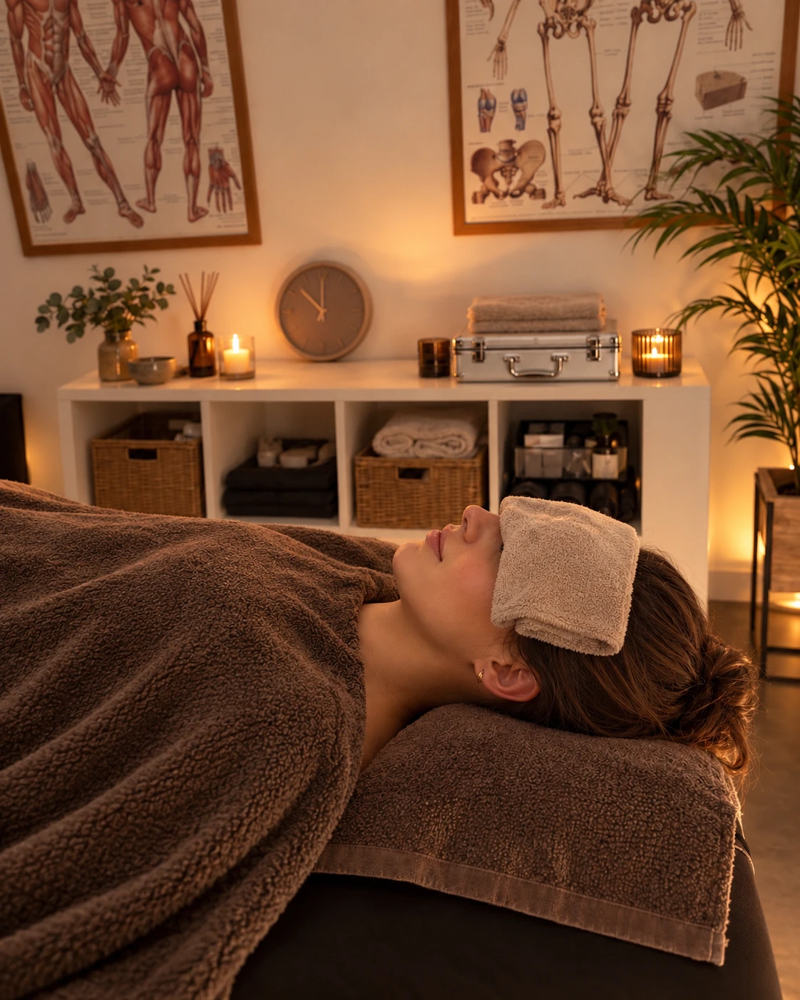

Calming somatic massage
Premium care for your nervous system. For deep release from tension and stress – or simply as a personal ritual of self-care.
More than a relaxation massage. This is individual somatic care in which I bring together mindful touch, calm breathing and presence.
I tailor the whole experience to you – from premium aromatic essences and Rituals and Saloos products to music therapy with music chosen for exactly how you feel right now. It’s not just about loosening your muscles for a moment, but about a calm your body will remember.

When the tension isn’t only in your muscles
This care is sought mostly by women who carry a lot – and whose bodies know it before their minds do.
- Long-term stress, exhaustion or the feeling that you just can’t switch off
- Tension from relationships or from carrying too much responsibility
- A difficult period of life after which your body can’t seem to “settle back down”
- A wish to sense more clearly what your body needs
- A longing simply to feel safe – without having to talk or explain anything
Safety is the foundation of everything
Calm presence
My calm acts as an anchor for your nervous system even before the first touch. The pace, the rhythm of touch and the breath all adapt to you throughout the whole session.
The body, where emotions are stored
We begin by mapping what is weighing on you right now. I then focus on the areas where that kind of tension tends to settle in the body – always guided by your experience, never by a template.
You decide
You can change, pause or decline touch at any moment. Silence and rest have just as much space – with no need to talk or do anything at all.
At a pace that feels right for you
Initial consultation
We briefly explore what you’re going through right now and where you feel it in your body.
Treatment
Uninterrupted touch from start to finish, warmth, music tuned to you and maximum comfort. No mechanical techniques and no predetermined routine.
Settling
A moment to return gently and a short closing.
The session length includes roughly 10–15 minutes for the consultation and closing.
For the curious: the method in depth
Theoretical foundation
The approach draws on Stephen Porges’s polyvagal theory and the principles of trauma-informed care – care that respects boundaries, choice and the body’s individual responses. The practitioner’s therapeutic presence forms the basis of every session: a calm, attentive presence acts as a regulating anchor for the client’s nervous system even before the first physical contact.
Co-regulation
The mutual influence of tension and calm is reflected in the pace of the work, the rhythm of touch, the breath and the way of communicating. Physical contact is never broken throughout the treatment. The practitioner consciously synchronises her breath with the client’s – the soft sound of an exhale near the upper body serves as a natural cue for the breath to deepen and slow, without any verbal instruction. This mechanism works directly at the level of the autonomic nervous system, activating the ventral vagus, the branch of the parasympathetic system associated with feelings of safety and calm. Warmth, music tuned to individual needs and maximum physical comfort are prerequisites for neuroceptive safety.
Somatic map of emotions
The initial consultation includes mapping the client’s current psychological load. Based on the somatic map of emotions – the link between interoception, emotional states and bodily experience described in the research literature – the work is deliberately focused on the areas of the body where a particular type of tension is stored. With relational tension, this may primarily involve the lower back, chest, abdomen and thighs; with the burden of responsibility, the shoulders, head, hands and soles of the feet. These connections are not a fixed scheme – the way emotions show up in the body is individual. Grounding is provided by full palm contact or by the appropriate pressure of the hands’ full weight, which activates proprioceptive receptors and supports activation of the ventral vagus.
Collaborative somatic approach
The client is not a passive recipient but an active co-creator of the process. Ongoing informed consent means the freedom to change, pause or decline touch at any moment. The aim is to support calm, relief from tension and a clearer awareness of one’s own bodily needs.
Regular care pays off
| 60 min | 90 min | |
|---|---|---|
| Single visit | CZK 1,300 | CZK 1,900 |
| Regular caretwice a month | CZK 1,200 | CZK 1,700 |
| First visitat the regular-care price | CZK 1,200 | CZK 1,700 |
The regular-care price applies when we book your second session of the month in advance. The session length includes roughly 10–15 minutes for the consultation and closing.
Massages take place at El Guapo Fight Academy, Na Rovnosti 2854/13A, Prague 3. For regular clients, I can also come to your home with my own massage table by arrangement – in Prague and the surrounding area.